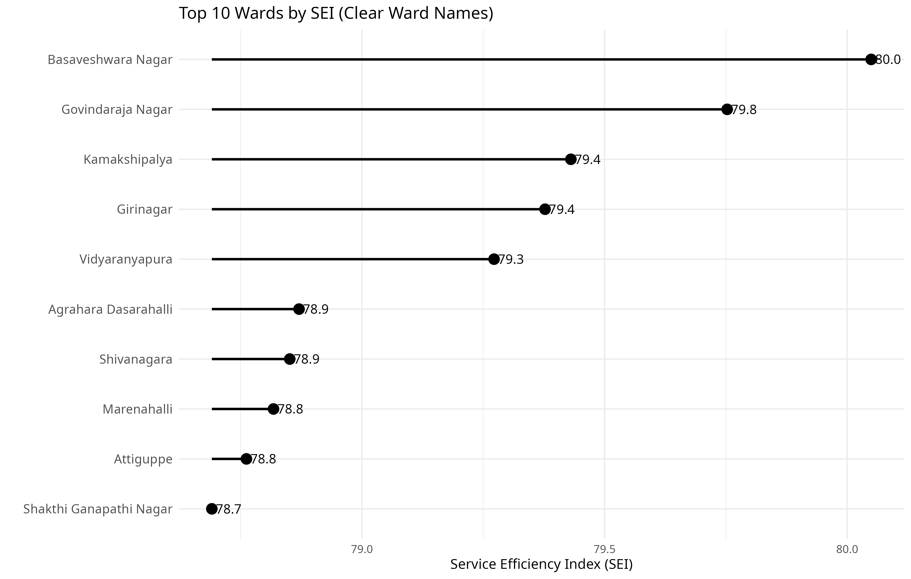
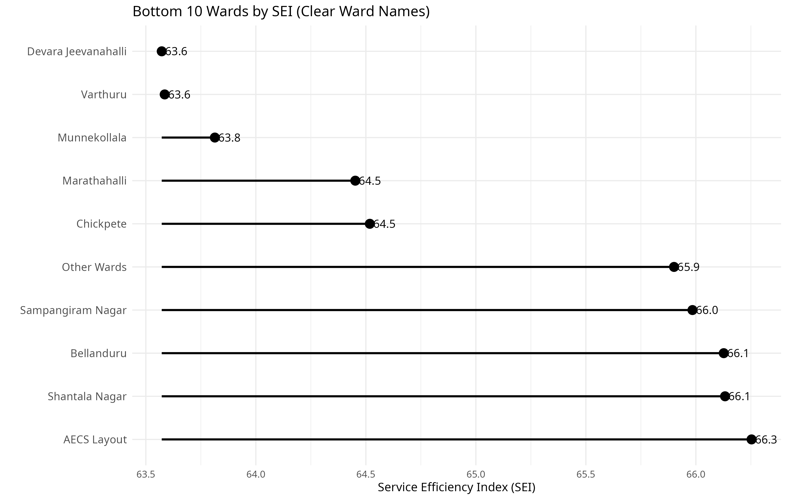
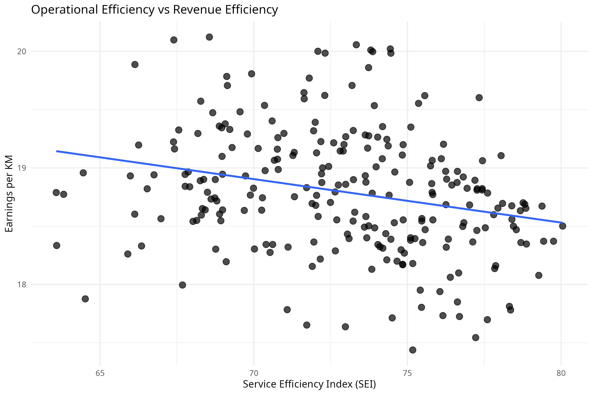

Highest SEI
Ten wards with the highest calculated scores in this dataset.

An exploratory analysis of Namma Yatri ward-level operations, comparing service efficiency, cancellations and driver earnings.
View project on GitHub ↗This project compares ride-search, booking and trip outcomes across Bengaluru wards. It uses a custom Service Efficiency Index (SEI) to summarize three operational rates, alongside cancellations and driver earnings per kilometre.
The dataset is an all-time ward-level snapshot; the exact collection date and original source still need to be documented. The findings are descriptive and do not establish cause and effect.
Each bubble represents a ward. Bubble size reflects searches and colour represents conversion rate. Hover over a bubble to see details; use the chart controls to zoom and reset.
The downward pattern is partly built into the metrics: completion rate contributes to SEI and is closely related to cancellation rate. It is not independent evidence of a causal relationship.
Ten wards with the highest calculated scores in this dataset.

Ten wards with the lowest calculated scores in this dataset.

The scatter plot compares the SEI with driver earnings divided by distance travelled. A score reflects the chosen weights; it does not measure the full experience or income of drivers.

SEI = 40% × estimate rate + 30% × conversion rate + 30% × completion rate
The SEI weights are analytical choices, not an official Namma Yatri measure. Ward-level aggregates may mask differences between individual trips or drivers.